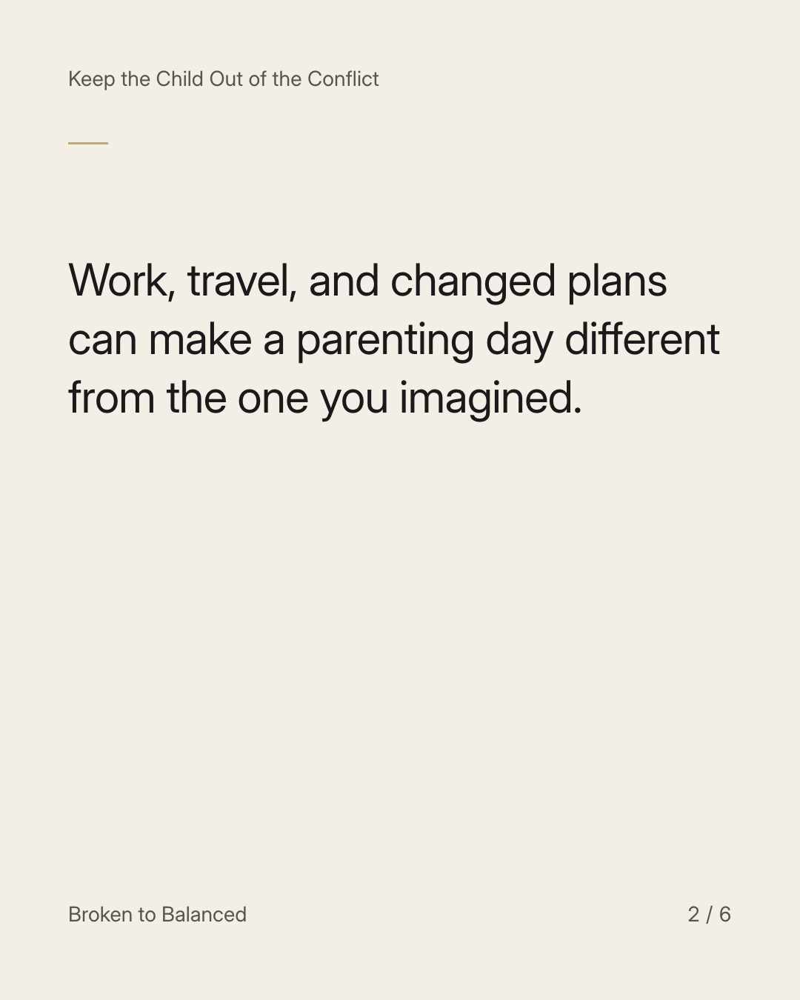
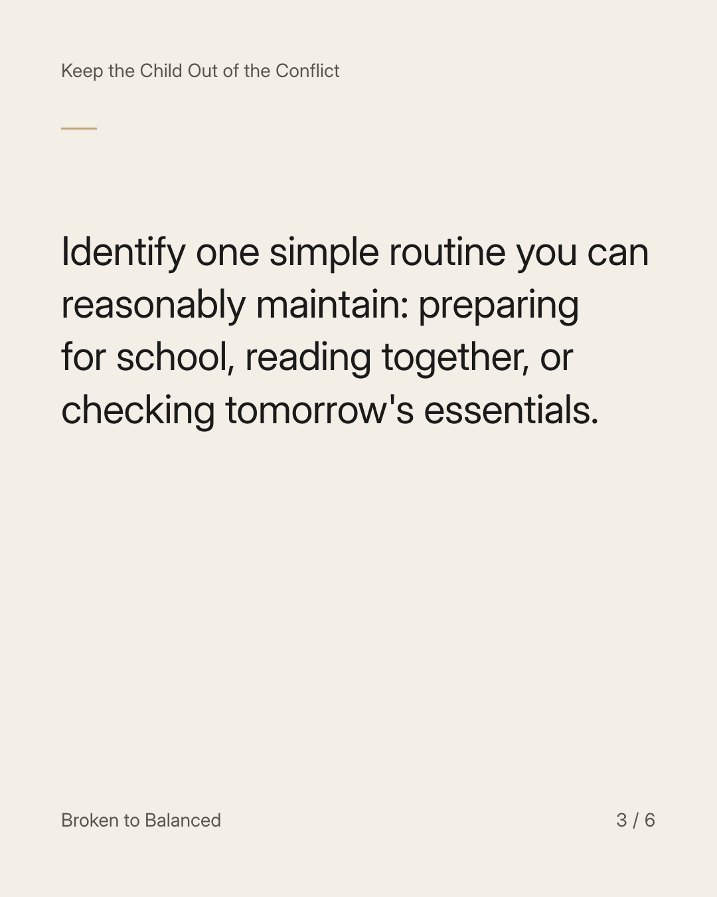
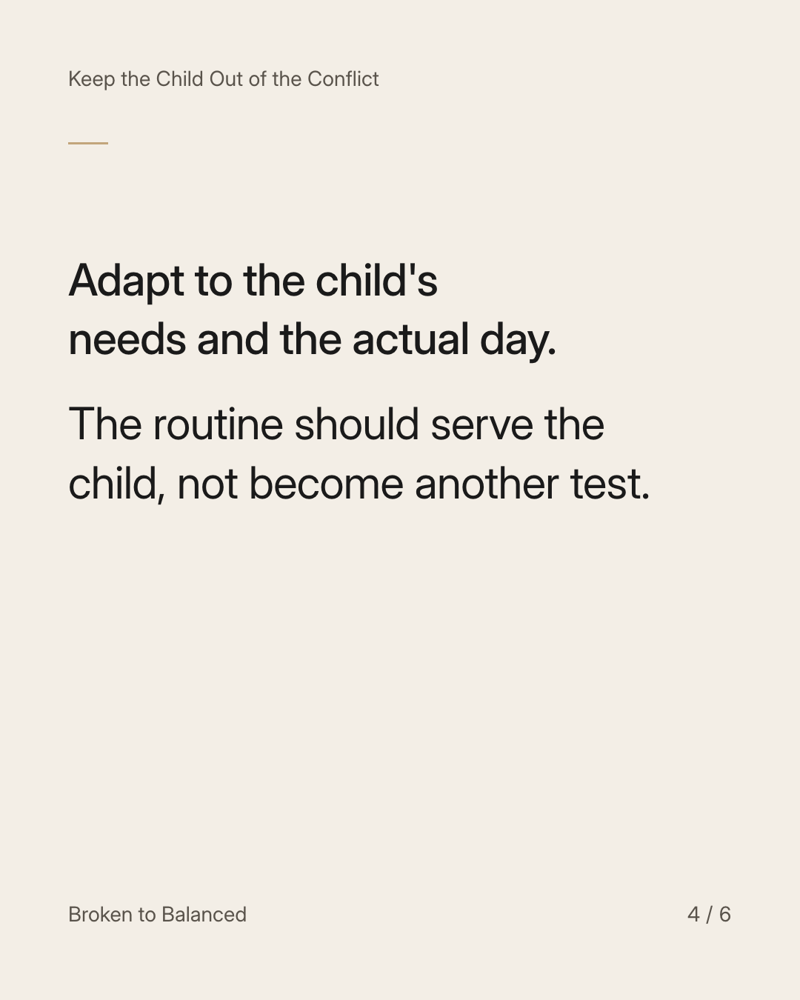
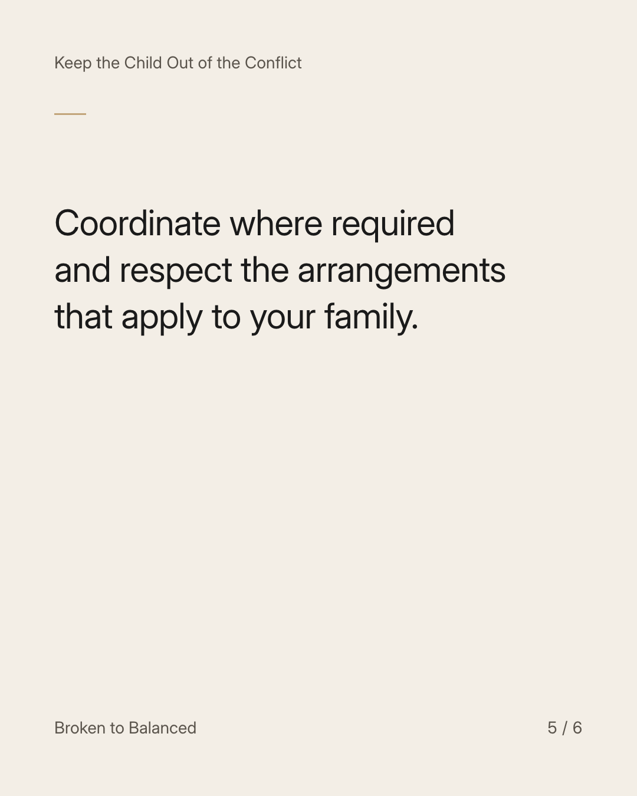
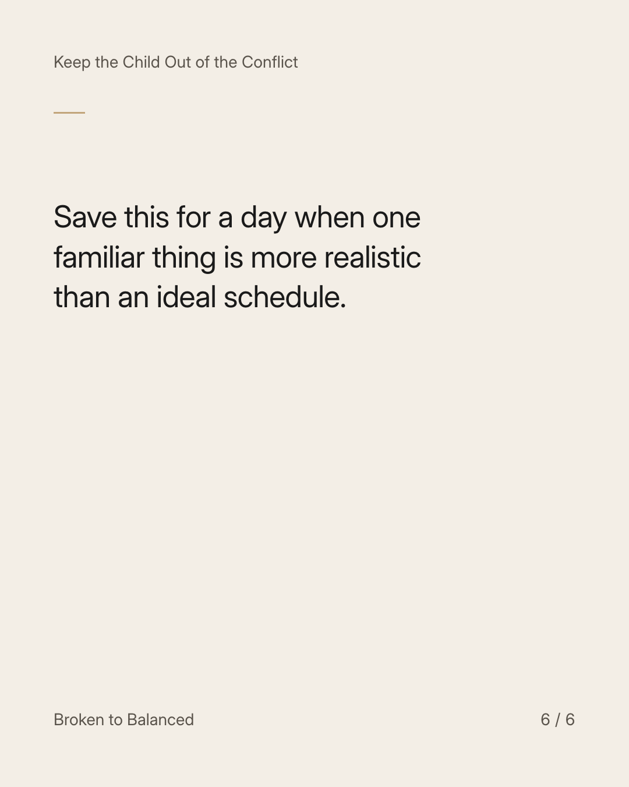

Exact text and accessibility text
A familiar routine does not need a perfect day around it.
Slide 1 of 6. A familiar routine does not need a perfect day around it.


Exact text and accessibility text
Work, travel, and changed plans can make a parenting day different from the one you imagined.
Slide 2 of 6. Work, travel, and changed plans can make a parenting day different from the one you imagined.


Exact text and accessibility text
Identify one simple routine you can reasonably maintain: preparing for school, reading together, or checking tomorrow's essentials.
Slide 3 of 6. Identify one simple routine you can reasonably maintain: preparing for school, reading together, or checking tomorrow's essentials.


Exact text and accessibility text
Adapt to the child's needs and the actual day. The routine should serve the child, not become another test.
Slide 4 of 6. Adapt to the child's needs and the actual day. The routine should serve the child, not become another test.


Exact text and accessibility text
Coordinate where required and respect the arrangements that apply to your family.
Slide 5 of 6. Coordinate where required and respect the arrangements that apply to your family.


Exact text and accessibility text
Save this for a day when one familiar thing is more realistic than an ideal schedule.
Slide 6 of 6. Save this for a day when one familiar thing is more realistic than an ideal schedule.
Exact caption
Plain-text fallback: select and copy the caption.